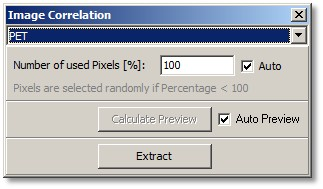
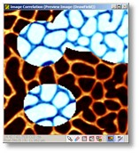
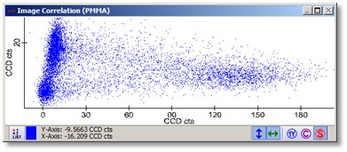

|
描述
图像相关对话框创建包含两个不同图像强度值相关信息的图谱对象。
输入与结果
输入：
至少两个具有相同空间变换的图像数据对象。
结果：
每个放置的图像对象一个图谱对象，可以使用图谱查看器的参数显示功能将其显示为相关点云。
用户界面

PET（组合框）：
选择预览图像查看器的当前图像（例如作为掩模操作的辅助）。
使用的像素数（浮点编辑框），自动（复选框）：
设置用于相关图/图谱对象的图像像素百分比。如果未使用所有像素（<100%），每次更改掩模或打开对话框时像素是随机选择的。对于非常大的图像，无法使用所有像素（总体限制为 100000 或约 300x300 像素），因此上限可能小于 100%。
计算预览（按钮），自动预览（复选框）：
参见自动预览。
提取（按钮）：
为每个放置的图像提取一个图谱对象。在同一图谱查看器窗口中打开图谱对象以显示相关图。
预览窗口

预览图像查看器显示当前选定的图像和掩模，可以更改掩模以定义哪些图像像素应用于相关图。

预览图谱查看器显示预览相关图。提示：如果不希望在更改掩模或像素百分比时自动缩放（例如，如果因为极值点而手动缩放），请关闭自动缩放功能。